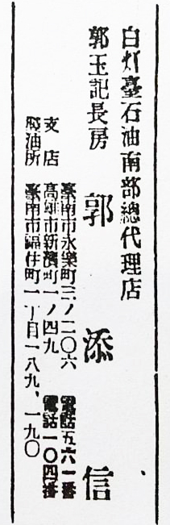

<!-- <link rel="stylesheet" href="./css/style.css">
<link rel="stylesheet" href="./font/bootstrap-icons.css"> -->
<div class="outter">
    <div class="verticle-text p-5 mx-auto ">
        <h1 class="title">
            郭家歷代祖先忌辰月曆表
        </h1>
        <small style="color:#edcccc;">生日以阿拉伯數字表示為國歷；以中文表示為農曆</small>
        <br>
        <small style="color:#edcccc;">淺灰色字表示離 郭添信(為信公)直系 關係太遠</small>
        <div class="table-responsive">
            <table class="table customTable border">
                <tbody>
                    <tr>
                        <th>︻正月︼</th>
                        <td>十七日&nbsp;二世祖&nbsp;陳<small>氏</small>&nbsp;忌
                        </td>
                        <td>二十七日&nbsp;四世祖&nbsp;張<small>氏</small>&nbsp;忌
                        </td>

                        <th>︻二月︼</th>
                        <td><span style="writing-mode: horizontal-tb;">1</span>日&nbsp;四世祖&nbsp;添信&nbsp;<b>生</b>
                        </td>
                        <td style="opacity: 0.6; ">二十四日&nbsp;四房祖&nbsp;天侯&nbsp;<b>生</b>
                        </td>
                        <td>二十九日&nbsp;始&nbsp;祖&nbsp;惟琶&nbsp;<b>生</b>
                        </td>
                        <td>三十日&nbsp;四世祖&nbsp;林<small>氏</small>&nbsp;忌
                        </td>

                        <th>︻三月︼</th>
                        <td style="opacity: 0.6; ">四日&nbsp;三世祖&nbsp;胡<small>氏</small>&nbsp;忌
                        </td>
                        <td style="opacity: 0.6; ">四日&nbsp;三世祖&nbsp;張<small>氏</small>&nbsp;<b>生</b>
                        </td>
                        <td>十六日&nbsp;二世祖&nbsp;尚賢&nbsp;<b>生</b>
                        <td style="opacity: 0.6; ">二十三日&nbsp;四世祖&nbsp;添忠&nbsp;<b>生</b>

                        <th>︻四月︼</th>
                        <td style="opacity: 0.6; ">十四日&nbsp;四房祖&nbsp;惟枝&nbsp;<b>生</b>
                        </td>
                    </tr>
                    <tr>
                        <th>︻五月︼</th>
                        <td>三日&nbsp;二世祖&nbsp;陳<small>氏</small>&nbsp;<b>生</b>
                        </td>
                        <td style="opacity: 0.6; ">十日&nbsp;三世祖&nbsp;楊<small>氏</small>&nbsp;忌</td>
                        <td style="opacity: 0.6; ">二十七日&nbsp;四房祖&nbsp;天候&nbsp;忌</td>

                        <th>︻六月︼</th>
                        <td style="opacity: 0.6; ">一日&nbsp;二世祖&nbsp;尚振&nbsp;忌</td>
                        <td>五日&nbsp;四世祖&nbsp;林<small>氏</small>&nbsp;<b>生</b></td>
                        <td style="opacity: 0.6; ">十四日&nbsp;四世祖&nbsp;為柱&nbsp;忌</td>
                        <td>十六日<small>(1960年7月9日)</small><br>&nbsp;&nbsp;&nbsp;&nbsp;&nbsp;&nbsp;&nbsp;&nbsp;&nbsp;&nbsp;&nbsp;四世祖&nbsp;添信&nbsp;忌
                        </td>
                        <td>十九日
                            <small>(明治43年7月25日)</small><br>&nbsp;&nbsp;&nbsp;&nbsp;&nbsp;&nbsp;&nbsp;&nbsp;&nbsp;&nbsp;&nbsp;三世祖&nbsp;德聲&nbsp;忌
                        </td>

                        <th>︻七月︼</th>
                        <td>二日&nbsp;三世祖&nbsp;汪<small>氏</small>&nbsp;忌</td>

                        <th>︻八月︼</th>
                        <td style="opacity: 0.6; ">十五日&nbsp;二世祖&nbsp;尚誠&nbsp;忌</td>
                        <td style="opacity: 0.6; ">二十日&nbsp;四世祖&nbsp;為仁&nbsp;<b>生</b></td>
                        <td style="opacity: 0.6; ">二十八日&nbsp;四房祖&nbsp;惟枝&nbsp;忌</td>
                        <td style="opacity: 0.6; ">三十日&nbsp;四房祖&nbsp;吳<small>氏</small>&nbsp;<b>生</b></td>
                    </tr>
                    <tr>
                        <th>︻九月︼</th>
                        <td style="opacity: 0.6; ">四日&nbsp;三世姑母&nbsp;淑女&nbsp;忌
                            <br>&nbsp;&nbsp;&nbsp;&nbsp;&nbsp;&nbsp;&nbsp;&nbsp;&nbsp;&nbsp;&nbsp;
                            <small>(郭寶玉的妹妹)</small>&nbsp;
                        </td>
                        <td>十六日&nbsp;始&nbsp;祖&nbsp;惟琶&nbsp;忌</td>
                        <td>十六日&nbsp;始&nbsp;祖&nbsp;施<small>氏</small>&nbsp;<b>生</b></td>
                        <td style="opacity: 0.6; ">三十日&nbsp;四世祖&nbsp;添智<b>生</b></td>

                        <th>︻十月︼</th>
                        <td><span
                                style="writing-mode: horizontal-tb;">5</span>日&nbsp;四世祖&nbsp;張<small>氏</small>&nbsp;<b>生</b>
                        </td>
                        <td style="opacity: 0.6; ">十三日&nbsp;四世祖&nbsp;添忠&nbsp;忌</td>

                        <th>︻十一月︼</th>
                        <td>15日&nbsp;三世祖&nbsp;德聲&nbsp;<b>生</b></td>
                        <td style="opacity: 0.6; ">十四日&nbsp;四房祖&nbsp;吳<small>氏</small>&nbsp;忌</td>
                        <td style="opacity: 0.6; ">十七日
                            <small>(昭和18年12月13日)</small><br>&nbsp;&nbsp;&nbsp;&nbsp;&nbsp;&nbsp;&nbsp;&nbsp;&nbsp;&nbsp;&nbsp;四世祖&nbsp;添智&nbsp;忌
                        </td>
                        <td>24日&nbsp;三世祖&nbsp;汪<small>氏</small>&nbsp;<b>生</b></td>
                        <td style="opacity: 0.6; ">二十一日&nbsp;四世祖&nbsp;為仁&nbsp;忌</td>
                        <td>二十五日&nbsp;二世祖&nbsp;尚賢&nbsp;忌</td>
                        <td style="opacity: 0.6; ">二十七日&nbsp;二世祖&nbsp;尚誠&nbsp;<b>生</b></td>

                        <th>︻十二月︼</th>
                        <td>四日&nbsp;始&nbsp;祖&nbsp;施<small>氏</small>&nbsp;忌</td>

                    </tr>
                </tbody>
            </table>
        </div>

        <h3 class="title title pe-4 ms-1">︻四世祖︼世代紀事</h3>
        <div class="table-responsive">
            <table class="table customTable customTable2 border">
                <!-- 為仁公 媽張氏-->
                <tbody>
                    <tr>
                        <th>為仁公</th>
                        <td>諱&nbsp;添麟字瑞書<b class="float-end">享年：四十歲</b>
                            <br>德聲公第一子
                            <br>生於一八八八年戊子年八月二十日寅時
                            <br>卒於一九二七年丁卯年十一月廿一日戌時
                        </td>
                    </tr>
                    <tr>
                        <th>媽張氏</th>
                        <td>諱&nbsp;便治<b class="float-end">享年：八十三歲</b>
                            <br>張府瑞堂翁第三女
                            <br>生於一八九一年辛卯年三月四日亥時
                            <br>卒於一九七三年癸丑年正月廿七日丑時
                            <br>舉子五
                            <ul>
                                <li>曰、振元</li>
                                <li>曰、振欽</li>
                                <li>曰、振熀</li>
                                <li>曰、振枝、出嗣洪張甲</li>
                                <li>曰、振純</li>
                            </ul>
                            <br>舉女二
                            <ul>
                                <li>曰、品&nbsp;&nbsp;&nbsp;&nbsp;適吳雲曜</li>
                                <li>曰、蓮子&nbsp;&nbsp;&nbsp;&nbsp;適高金樹</li>
                            </ul>
                        </td>
                    </tr>
                </tbody>
                <!-- 為忠公 媽許氏-->
                <tbody>
                    <tr>
                        <th>為忠公</th>
                        <td>諱&nbsp;添忠<b class="float-end">享年：二十三歲</b>
                            <br>德聲公第二子
                            <br>生於一八九九年己亥年三月廿三日
                            <br>卒於一九二一年辛酉年十月十三日
                        </td>
                    </tr>
                    <tr>
                        <th>媽許氏</th>
                        <td>諱&nbsp;越<b class="float-end">享年：八十四歲</b>
                            <br>許禹山第二女
                            <br>生於1893年10月10日
                            <br>卒於1976年4月29日
                            <br>舉子一
                            <ul>
                                <li>曰、振亨</li>
                            </ul>
                            <br>舉女一
                            <ul>
                                <li>曰、炎森</li>
                            </ul>
                        </td>
                    </tr>
                </tbody>
                <!-- 為信公 媽林氏-->
                <tbody style="background: rgba(255,255,255,.2);">
                    <tr>
                        <th>為信公&nbsp;</th>
                        <td>諱&nbsp;添信<b class="float-end">享年：五十七歲</b>
                            <br>德聲公第三子
                            <br>生於1903年(民國前9年)2月1日
                            <br>卒於1960年(民國49年)7月9日<br>(農曆六月十六日)
                            <a data-fancybox="group1" href="./img/郭玉記名片1930_01_03.jpg" class="px-1 d-block">
                                </a>
                            <a data-fancybox="group1" href="./img/郭添信名片.jpg" class="d-block"></a>

                            <span>↓郭添信與張春的戶籍謄本</span>
                            <a data-fancybox="group1" href="./img/郭添信_戶籍謄本.jpg" class="d-block"></a>
                        </td>
                    </tr>
                    <tr>
                        <th>媽林氏(元配)</th>
                        <td>諱&nbsp;悅治(原諱:清蓮)<b class="float-end">享年：二十六歲</b>
                            <br>林文江第二女
                            <br>生於一九0三年癸卯年六月五日未時
                            <br>卒於一九二八年戊辰年二月三十日寅時
                        </td>
                        <th>媽張氏&nbsp;</th>
                        <td>諱&nbsp;春<b class="float-end">享年：XX歲</b>
                            <br>廖火生長女
                            <br>於民國前陸年1906年10月5日
                            <br>卒於不詳
                            <br>
                            父&nbsp;廖火生&nbsp;/&nbsp;母&nbsp;廖陳綠
                            <br>舉子六
                            <ul>
                                <li>曰、振益 <small>一</small> </li>
                                <li>曰、振木 <small>三</small> </li>
                                <li>曰、振福 <small>四</small> </li>
                                <li>曰、振良 <small>七</small> </li>
                                <li>曰、振吉 <small>八</small> </li>
                                <li>曰、振壽 <small>九</small> </li>
                            </ul>
                            <br>舉女四
                            <ul>
                                <li>曰、月裡 <small>二</small> </li>
                                <li>曰、月雲 <small>五</small> </li>
                                <li>曰、月仙 <small>六</small> </li>
                                <li>曰、月燕 <small>十</small> </li>
                            </ul>
                            <a data-fancybox="group1" href="./img/郭添信_張春_戶籍謄本.jpg" class="d-block"></a>
                        </td>
                    </tr>

                </tbody>
                <!-- 為智公 媽石氏-->
                <tbody>
                    <tr>
                        <th>為智公</th>
                        <td>諱&nbsp;添智<b class="float-end">享年：三十七歲</b>
                            <br>德聲公第四子，母親為汪氏美
                            <br>生於一九 0 七年丁未年九月三十日己時
                            <br>卒於一九四三年癸未年十一月十七日酉時
                        </td>
                    </tr>
                    <tr>
                        <th>媽石氏</th>
                        <td>諱&nbsp;鶯<b class="float-end">享年：八十四歲</b>
                            <br>石圭角第一女
                            <br>舉子二
                            <ul>
                                <li>曰、振貞</li>
                                <li>曰、振楠</li>
                            </ul>
                            <br>舉女二
                            <ul>
                                <li>曰、採勤</li>
                                <li>曰、俊江</li>
                            </ul>
                        </td>
                    </tr>
                </tbody>
                <!-- 為柱公-->
                <tbody>
                    <tr>
                        <th>為柱公</th>
                        <td>諱&nbsp;國柱<b class="float-end">享年：十八歲</b>
                            <br>德寬公第一子
                            <br>生於一八九三年癸己年三月吉日
                            <br>卒於一九一一年辛亥年吉月十四日亥時
                        </td>
                    </tr>
                    <tr></tr>
                </tbody>

            </table>
        </div>

        <h5 class="title title pe-4 ms-1" style=" line-height: 1.5; ">《郭姓惟琶渡臺始祖世襲譜》作者<br>
            (郭添信的旁系)五世的郭振元 簡介</h5>
        <div class="table-responsive">
            <table class="table customTable customTable2 border">
                <!-- 善長公 媽洪氏-->
                <tbody>
                    <tr>
                        <th>善長公</th>
                        <td>諱&nbsp;振元&nbsp;法號慧乾&nbsp;字禮源&nbsp;號炳村
                            <br>為仁公第一子
                            <br>生於一九一0年庚戍年十月八日
                            <br>卒於不詳
                        </td>
                    </tr>
                    <tr>
                        <th>媽洪氏</th>
                        <td>諱&nbsp;紅鳳&nbsp;法號慧坤<b class="float-end">享年四十九歲</b>
                            <br>洪鴻基第四女
                            <br>生於一九一二壬子年六月三日寅時
                            <br>卒於一九六0年已亥年十二月十二日酉時
                            <br>舉子二
                            <ul>
                                <li>曰、光世</li>
                                <li>曰、春廷</li>
                            </ul>
                            <br>舉女四
                            <ul>
                                <li>曰、秋梧</li>
                                <li>曰、靜澤</li>
                                <li>曰、香吟</li>
                                <li>曰、怡文</li>
                            </ul>
                        </td>
                    </tr>
                </tbody>
            </table>
        </div>


    </div>
</div>